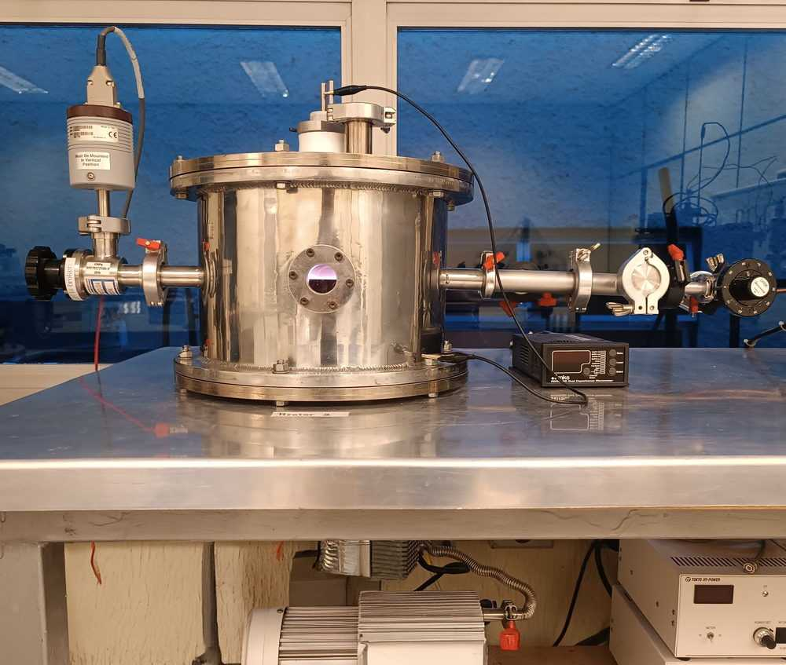
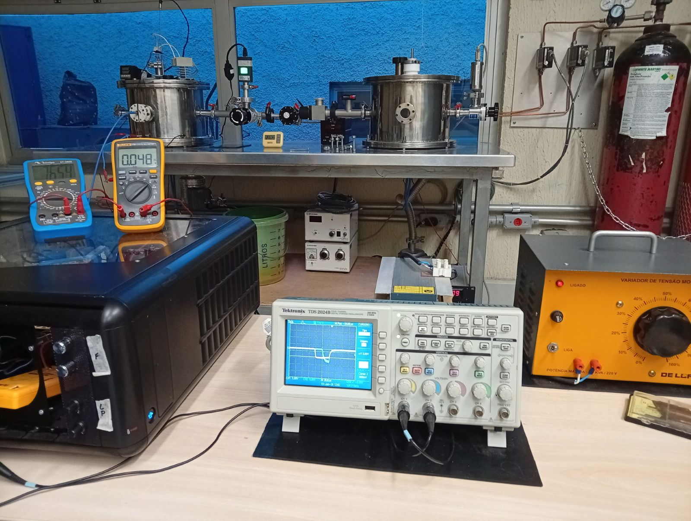
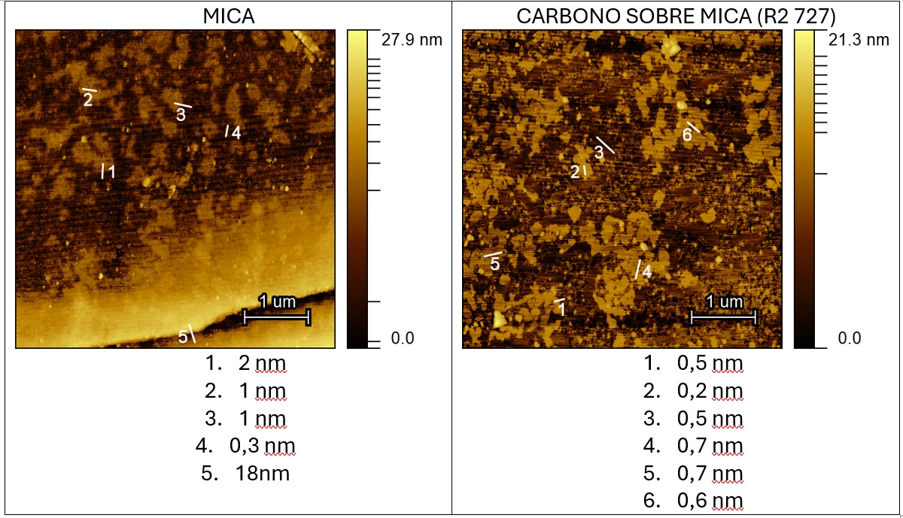

SÍNTESE
Deposição
Magnetron Sputtering pulsado, com alvo de grafite, atmosfera de argônio e frequência de 1 kHz.
REATOR LaPTecEngenharia, ciência e pesquisa experimental.
Graduando em Engenharia de Controle e Automação na UNESP. Pesquisa em materiais, filmes finos e caracterização experimental.
UM VÍDEO · INSTAGRAM ENTENDA O QUE É (TODO MUNDO ODEIA O LUIZ) O link abre o Instagram e mostra o vídeo que foi classificado. ↗



Minha formação está na engenharia. Minha curiosidade não fica restrita a uma única área (felizmente, ou não).
Sou graduando em Engenharia de Controle e Automação pela Universidade Estadual Paulista (UNESP), no Instituto de Ciência e Tecnologia de Sorocaba.
No LaPTec, desenvolvo pesquisa científica em síntese e caracterização de materiais, trabalhando com deposição de filmes finos e análise de suas propriedades físicas.
A experiência combina atividades experimentais, análise de dados e fundamentos de física, eletrônica e ciência dos materiais.
Estudo experimental de filmes de carbono depositados por Magnetron Sputtering pulsado.
O trabalho investiga a deposição de filmes ultrafinos de carbono por Magnetron Sputtering pulsado, avaliando a influência do tempo de deposição sobre a espessura, a transmitância óptica, a molhabilidade e a morfologia superficial.
A síntese utiliza alvo de grafite e atmosfera de argônio. As amostras são produzidas sobre substratos de vidro e mica e posteriormente submetidas a diferentes técnicas de caracterização.
Uma sequência de etapas experimentais para produzir os filmes e investigar suas propriedades.
Magnetron Sputtering pulsado, com alvo de grafite, atmosfera de argônio e frequência de 1 kHz.
REATOR LaPTecDeterminação da espessura dos filmes depositados em diferentes tempos.
DEKTAK 150Avaliação da transmitância óptica dos filmes em função do tempo de deposição.
LAMBDA 750Medição do ângulo de contato para avaliar o comportamento superficial.
RAMÉ-HARTAnálise da topografia e da morfologia superficial em escala nanométrica.
PARK XE100 / AFMAs amostras foram preparadas em diferentes condições para comparação das propriedades.
O tempo de deposição influencia características físicas e superficiais dos filmes, olha aqui.
Para 1 minuto de deposição, a espessura ficou abaixo do limite de detecção do equipamento.
A transmitância óptica diminuiu com o aumento do tempo de deposição.
O aumento do ângulo de contato indica alteração no comportamento de molhabilidade da superfície.
A análise por AFM confirmou a presença do filme depositado sobre mica e revelou uma morfologia superficial semelhante à observada em estruturas de folhas de grafeno.
Agradeço aos pesquisadores e colaboradores que contribuíram para o desenvolvimento deste trabalho no LaPTec. Agradeço a ID pelo vídeo incrível, e a DUDA pela paciência em me mostrar uma tecnologia super moderna, o CANVA (lançado em 2013).
Ciência, engenharia, gambiarra e um pouco de tudo.
VOLTAR AO INÍCIO ↑